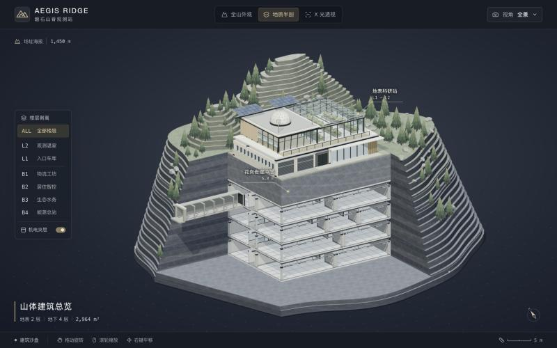
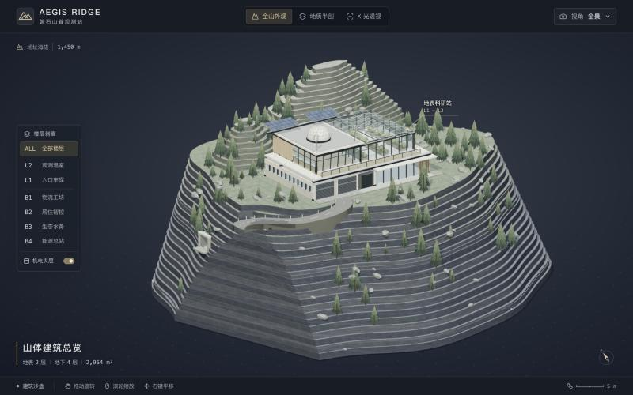
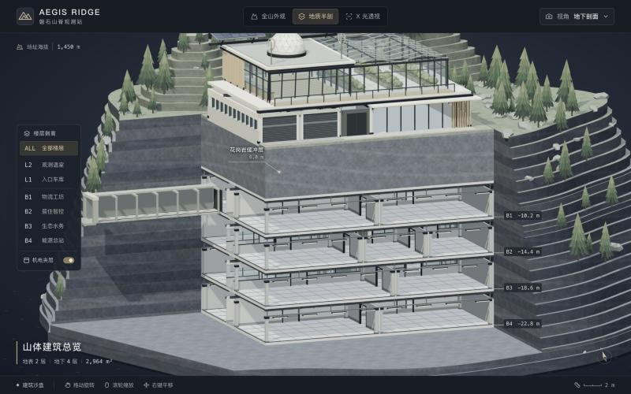
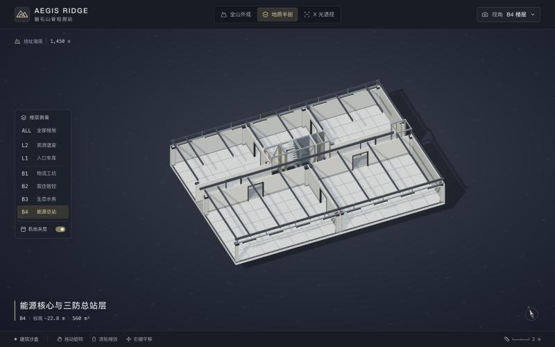

总评
M1 的工程骨架是对的，画面也干净。问题在于它说错了语言：深海军蓝配香槟金的暗色仪表盘，1.2 m 等厚层叠的纸板山，正交轴测的玩具相机。三样叠在一起，就是你感觉到的廉价模板感。
建议整件作品改用两种语域。站在山外时是实景：真实尺度的高山、天空、空气透视和时间。剖开以后是图纸：剖切面、标高、轴网、图例都遵守建筑与地质制图规范。HUD 则像一张图纸的图签，加上一件测量仪器的读数窗。
当前画面忠实执行了 docs/02。那里写着“建筑沙盘式等高线阶梯地形”和“深炭磨砂玻璃半透明面板”，色板 17 个色值里有 12 个是 Tailwind 默认色、2 个来自 Nord 编辑器主题。不先改文档，下一个 agent 会继续做出同样的东西。
八个关键动作（按优先级）
- 先改规格。重写
docs/02，确立“实景 × 图纸”双语域，删掉等高线阶梯、磨砂玻璃和框架默认色板。 - 相机默认改为透视长焦。正交只留给平面、剖面这些图纸视图，两者之间用投影变形过渡。
- 地形换成真实尺度的侵蚀高度场。主山 2–3 km，远景 10 km，剖切面按地质剖面图来画。
- 建立程序化材质库和光照体系。物理天空与空气透视、AgX 色调映射、环境光遮蔽、分楼层光温。
- HUD 重做为全屏仪器。图签、真实比例的标高尺、线型图例、比例尺与坐标读数；去掉图标、圆角、玻璃和金色。
- 相机做成状态机。现场、剖面、剖切盒、平面、楼层俯瞰、第一人称之间连续过渡，招牌转场是“竖井下潜”。
- 外围体系遵循“藏于科研”。每一处安保和生命线都有一个说得通的科研或山地工程用途。
- 用固定机位的出片画面做视觉验收。每个里程碑自动截图，由你本人逐张签收。
前端去 AI 味
现在的界面是一套通用的暗色 SaaS 模板套在了一座山上。每个零件都不算错，合在一起却没有一处来自这个项目自己的世界。

1 2 3 4 5 6 7 8 9 10 11 12 13 14| # | 现象 | 为什么像模板 | 改成什么 |
|---|---|---|---|
| 1 | 金色描边圆角图标块；全大写 AEGIS RIDGE 拉开 0.125em 字距；中文副标再加 0.16em 字距 | 通用的“高端品牌”套路，与科研站无关 | 图签里写正式机构名与站号，如“磐石山脊高山生态与气象观测站 ARS-01”，不要 logo 块 |
| 2 | 居中分段控件：图标加文字、圆角容器、暖金选中态和内阴影 | 与 shadcn、Tailwind UI 的 Tabs 组件同一形态 | 纯文字视图切换，选中用 2 px 下划线，旁边标键位 |
| 3 | 默认画面同时出现 12 个线性图标：山、图层、扫描线、相机、手、鼠标、十字、尺子、雪山…… | 图标不承载信息，只是在填空 | 删掉。图形只留给必须用图形表达的东西：图例线型、指北针、剖切符号 |
| 4 | 场址海拔、指北针、手势提示各占一角 | 装饰信息占了 HUD 的大半；剖切位置、标高、比例、投影这些工程信息反而缺席 | 并入图签一行：±0.000 = 海拔 1450.000 m |
| 5 | 楼层面板：9 px 圆角、半透明深蓝底、28 px 投影 | 玻璃拟态浮层卡片，最常见的 AI 仪表盘部件 | 贴边的真实比例标高尺（图 1-5） |
| 6 | iOS 式拨动开关控制“机电夹层” | 消费级控件出现在工程工具里，语汇不对 | 图层清单里的一行勾选，快捷键 M |
| 7 | 左下大标题加金色竖条 | 典型的 hero 标题加强调竖条 | 图签中的“当前图名”一栏 |
| 8 | 绿色状态点“建筑沙盘”，页脚常驻操作提示 | 没有任何实时数据，却借用了“在线”指示 | 删掉。操作提示只在第一次进入时出现一次 |
| 9 | 径向渐变的暗角背景 | 产品渲染图的聚光灯；模型悬浮在虚空里，没有天空和地平线 | 场景内的物理天空、远山和空气透视 |
| 10 | 场景标注：发光圆点加随意引线，标签压在建筑上 | 网页 tooltip 的语法，不是图纸的语法 | 标高符号、剖切符号、轴号、房间标签；引线只走 0°、45°、90°，并做避让 |
| 11 | 山体按 1.2 m 等厚层叠，侧壁垂直 | 千层蛋糕 | 侵蚀高度场，见 R-02 |
| 12 | 同一配方的圆锥松均匀撒布 | 火车模型树 | 按海拔、坡向、汇流分带的植被 |
| 13 | 平底托盘、十字测量网格、西侧一刀直切 | 沙盘底座语汇，与“实景”目标冲突 | 地形一直延伸到远景，消失在空气透视里 |
| 14 | 剖开后是白色空层，切口没有任何表达 | 像停车库，不像剖面图 | 剖到的岩体和楼板做 poché（涂黑或图例填充），剖切线 2 px |
色板出在哪里
docs/02 的 17 个色值里，12 个是 Tailwind 默认色：gray-900、slate-800、slate-300、slate-400、sky-300、sky-400、amber-500、cyan-500、purple-500、emerald-500、yellow-500、red-500。另有 2 个是 Nord 编辑器主题的 Polar Night（#3B4252、#4C566A）。实现时又叠加了一层海军蓝配香槟金。这些颜色来自 UI 框架和代码编辑器，不来自山、岩石、混凝土，也不来自工程标准。去 AI 味的第一条规则：每一个颜色都要说得出它取自哪里。
设计系统提案
核心思路是让界面的每个元素都对应一种真实的制图或仪器惯例：图签、标高符号、轴号、剖切符号、线型图例、分段比例尺。建筑师和工程师一眼就认得这些语汇，通用模板里一个都没有。
图纸 · 日间（现场、平面、剖面）
#ECEEEA#15181A#545B61#000000#C0372A仪器 · 夜间（X 光、夜景、漫游）
#0F1112#E5E6E1#9AA0A5#2A2D2F#FF6A5A取自现场的中性色
#B9A196#D3D3CD#2D2B2A#B7B3AA#A3A199#7E4524#7A8457#C3CEDD工程色谱（降饱和，并配线型）
场景里的管道近看时，可以再按 GB 7231《工业管道的基本识别色》贴识别色环、介质名和流向箭头（例如水的识别色是艳绿）。地图层面的系统色和管道表面的标准识别色是两件事：前者服务于读图，后者服务于“真实”。
Noto Sans SC
朱雀仿宋（OFL）
- 面积
- 160 m²
- 标高
- ▽ −18.600
- 净高 / 夹层
- 3.000 / 0.900
- 补光负荷
- 22.0 kW
- 主责
- 顾清禾
信息架构
| 层级 | 内容 | 何时出现 |
|---|---|---|
| 常驻 | 图签（站名与站号、当前图名、投影与镜头、基准标高、时间与情景）、标高尺、视图切换、比例尺与指北针 | 始终 |
| 情境 | 线型图例、选中对象的数据表、剖切盒控制 | 进入对应视图，或选中对象时 |
| 瞬时 | 光标处的坐标、标高与轴号，悬停位号标签，测量结果 | 光标停留时 |
| 隐藏 | 快捷键表、首次操作提示 | 按 ? 键，或第一次进入时 |
线、形与动效
- 线宽只有两种：1 px 细线、2 px 剖切线。圆角 0–2 px。不用投影、模糊和渐变。状态靠线宽、下划线和填充表达。
- 全屏出血：去掉顶栏和页脚两条实色带，3D 画面铺满，HUD 贴四边，边距统一 24 px（窄屏 16 px）加安全区。
- 悬停只改线宽和下划线，不铺色块。一次只开一个浮层，Esc 关闭。
| 动作 | 时长 | 曲线 | 说明 |
|---|---|---|---|
| 界面状态切换 | 120 ms | cubic-bezier(.2,0,0,1) | 只变线宽、填充和透明度，不位移 |
| 楼层剥离 | 每层 360 ms，错开 40 ms | 同上 | 上部楼层原位淡出，保持真实标高；当前层切口用 2 px 剖切线勾出 |
| 相机移动 | 700–1100 ms | 临界阻尼 | 距离越远越久，但有上限；camera-controls 的 smoothTime 约 0.3 s |
| 剖切线描绘 | 600 ms | 线性 | 进入图纸视图时，剖切线和轴网像绘图仪一样描出来 |
| 不用 | — | — | 呼吸灯、外发光、扫光、弹簧回弹、视差倾斜 |
键盘优先：1–6 切层，V 切视图，X 光，W 漫游，F 聚焦选中，H 隐藏 HUD（出片用），? 显示快捷键。首次进入时，画面先用约 1.5 s 描出剖切线和轴网，再填入材质与光照，同时掩盖几何生成的时间。
山体、天空与材质
山不像山，首先是尺度错了。整座“山”约 39 m 高（−25.3 m 到 +13.6 m），比避难所本身高不了多少，站点其实坐在山顶平台上。真实的半山腰意味着上方还有几百米山体，下方是几百米深的山谷。尺度对了，等高线蛋糕就没有存在的理由。

全山外观：等厚层叠、西侧直切、平底托盘、同色松树。

地下剖面：切口是挖掉一个直角块，6 m 岩层是一个贴了纹理的方块。

B4 单层：白色空层悬在虚空里，切口没有表达。
现状诊断
- 形态。山体是用扰动椭圆轮廓按固定间距挤出的：地下段 1.2 m 一层，地上段 0.85 m 一层，侧壁全部垂直。坡面没有连续法线，光照只剩“台面亮、侧壁暗”两种值。没有山脊线、冲沟和倒石堆，这些是流水和重力留下的地貌语法。
- 边界。西侧被测区边界一刀直切，底部是平托盘加十字测量网格，这是沙盘底座的语汇。
- 剖切。半剖是挖掉一个直角块，切面上看到层层台阶断面，而不是一块连续的岩体。
- 植被与石头。圆锥松同色均布，石头是十二面体。
- 材质。顶点色平涂加一张 128² 的灰度颗粒，所有表面的粗糙度几乎一样；没有法线细节、边缘磨损和雨痕。
- 光与空气。正午单一太阳加半球光。没有天空、地平线、远山和空气透视，画面没有纵深，也读不出尺度。
方案一：多尺度的真实地形
- 四个尺度。远景 10 km（低模剪影加空气透视，按郭熙“平远”的意思层层退远，5–7 层）；主山 2–3 km 的侵蚀高度场，站点上方约 600 m 山体、下方约 300 m 山谷（图 4-1 就是按这个比例生成的）；场地 300 m 的高精度块（平台、道路、挡墙）；以及避难所周围约 80 m 见方、可以剖开的剖切体。
- 生成。ridged multifractal 加 domain warp 打底，再做水力侵蚀（雨滴粒子）和热侵蚀（倒石堆坡角约 35°）。输出高度、坡度、曲率、汇流量、坡向五张驱动图，之后的材质和植被全部由驱动图决定。构建期用 Node 脚本按固定种子预计算，产出 16 位高度图随包发布：仍然是纯代码生成，又不拖慢首屏。
- 场地整形。用 SDF 把平台和道路“刻”进高度场。挖方面做喷射混凝土加岩钉阵列和泄水孔，填方用石笼挡墙；道路半挖半填，有边沟、护栏、会车点，回头弯加宽。
- 剖切面。剖切面是一个真正的平面。地形是高度场，剖面轮廓沿剖切线采样就能得到，切面多边形可以解析生成，不需要模板缓冲；建筑部分用模板缓冲封口，做法同 three.js 官方的 clipping stencil 示例。切面按地质剖面图来画（图 2-2）：自上而下是表土、全风化、强风化、中风化、新鲜花岗岩；两组陡倾节理加一组缓倾节理；浅色细晶岩脉；地下水位虚线。规格书里的 6 m 防护缓冲层是“高强混凝土 + 花岗岩复合”，切面上要分层画：混凝土层用钢筋混凝土图例，岩层与周围花岗岩连续，而不是现在这样一个贴了纹理的方块。剖到的线 2 px，看到的线 1 px。
- 转场。从现场切到剖面时，剖切平面前方的山体整体向南平移约 40 m 并淡出，像把模型从中间拉开，而不是瞬间消失。
方案二：程序化 PBR 材质库
先定两条通用规则。第一，所有方块都要有 5–20 mm 的倒角：完全锐利的棱边是 CG 感最强的信号，真实物体的棱都会接住一条高光。第二，每种材质都有三层：基础色与粗糙度、用曲率和 AO 驱动的边缘磨损与积灰、按朝向生成的雨痕或水渍。
| 材质 | 用在哪里 | 程序化做法 | 真实感来自 |
|---|---|---|---|
| 新鲜花岗岩 | 剖切面、崖壁、挖方面 | Worley 晶胞分三相（长石约 55%、石英 30%、黑云母 15%），叠低频色差和微法线 | 晶粒尺度要对：远看要“糊”成灰粉色 |
| 风化岩与地衣 | 露头、碎石坡 | 曲率与坡向驱动：凸处长黄绿、橙色地衣斑，凹处深色水渍 | 高山岩石上最有说服力的细节就是地衣 |
| 碎石坡与草甸 | 坡面 | 坡度大于 35° 为岩，30–35° 为碎石，小于 30° 为草甸；汇流量大的沟底更湿更绿 | 材质边界跟着地形走，不跟着高度线走 |
| 积雪 | 背阴坡、沟槽、屋面 | 按坡度、朝北、海拔和风向沉积；法线扰动做风蚀纹，镜面闪点 | 迎风面薄，背风面厚 |
| 清水混凝土 | 挡墙、平台、硐口 | 木模板条纹、对拉螺栓孔、浇筑分层色差 | 螺栓孔和模板缝的排布要有规律 |
| 喷射混凝土加岩钉 | 挖方边坡、平硐 | 凹凸高度噪声上叠规则的岩钉垫板阵列和泄水孔 | 规则阵列落在不规则表面上 |
| 耐候钢 | 门框、护栏、设备罩 | 锈色 fBm，竖向雨痕流挂，边缘更深 | 雨痕总在窗台和横梁下方 |
| 落叶松外挂板 | 地表站外墙 | 竖向木条、缝影、扭曲木纹；南立面风化成银灰 | 风化不均匀：檐下仍是新木色 |
| 低铁玻璃 | 幕墙、温室 | 物理材质、天空反射、极淡的绿色边缘 | 反射里要看得见天空和山 |
| 环氧地坪、钢格栅 | 地下机房 | 轻微橘皮纹，划痕方向沿 AGV 路径 | 磨损要沿着路径走 |
方案三：天空、大气与光
- 天空。用物理天空，太阳位置按真实经纬度、日期和时刻计算。可以评估 Takram 开源的
@takram/three-atmosphere：基于 Bruneton 预计算散射，带 Sky、AerialPerspective 等 R3F 组件，MIT 授权，API 仍在变动。 - 空气透视。距离雾加高度雾，雾色取天空色。远山的对比度和饱和度逐层降低，这是画面纵深的主要来源。
- 云海。山谷逆温层里的云海是本项目最好的招牌画面：站点在云上，远山浮在云里。可以用
@takram/three-clouds的体积云，或者几层噪声体积片。 - 山体调色。遵循 Eduard Imhof 的瑞士地形晕渲原则：受光面偏暖黄，背光面偏冷蓝紫；高处对比强，低处对比弱且更雾。图 4-1 的地形底图就是按这个原则着色的。
- 光。太阳用 CSM 级联阴影，近处锐利、远处覆盖整座山；天空环境光随时刻更新。室内用 RectAreaLight 面光源加烘焙 AO（在 Worker 里用 three-mesh-bvh 逐顶点计算）；每层实时投影灯最多 1 盏，其余靠自发光和光照探针。
| 楼层 | 主光 | 点缀 | 情绪 |
|---|---|---|---|
| L2 观测温室 | 天光，随时刻变化 | 夜间 2700 K 暖光点 | 开阔 |
| L1 门厅车库 | 4000 K 中性 | 车库琥珀警示灯 | 公共，普通 |
| B1 物流工坊 | 4500 K 工业中性 | 黄黑警示线，AGV 状态灯 | 有序，干活 |
| B2 居住智控 | 2700–5000 K 节律光 | 中控室夜间红光模式 | 温暖，私密 |
| B3 生态水务 | 全光谱补光，偏品红白 | 鱼池焦散，冷库 6500 K | 生机 |
| B4 能源总站 | 5000 K 冷白 | 旋转警示灯，设备状态灯 | 克制，警觉 |
补光灯不要用“红蓝紫”的夜店色。现代垂直农场多用全光谱白光，只带一点品红，看起来更高级，也更真实。
方案四：后处理与质量分级
- 色调映射用 AgX（three.js r160 起内置），比 ACES 更不容易把高光推成假橙色。
- 环境光遮蔽：WebGL 路线用 N8AO，WebGPU 路线用 three 自带的 GTAO 节点。
- Bloom 只给灯具、屏幕、指示灯，不给整个画面。
- 抗锯齿用 SMAA，或 WebGPU 路线的 TRAA。
- 四种情景各一张 3D LUT（日常、极寒、生化、核封锁），只调色，不加滤镜感特效。
- 极轻的胶片颗粒，用来消除天空色带。景深和移轴只在照片模式里开。
- 用 drei 的 PerformanceMonitor 在四档质量间自动切换：阴影级联数、AO 分辨率、植被密度、DPR。目标仍是主流笔记本 60 FPS。
渲染路线：建议先走 WebGL2
WebGPU 加 TSL 写程序化材质更顺手，自带 triplanarTexture、MaterialX 噪声函数和 GTAO、TRAA 节点。但 Takram 的大气与云、pmndrs postprocessing（N8AO、LUT、选择性 Bloom）、three-custom-shader-material 这些成熟的库都在 WebGL2 生态里。建议现在走 WebGL2，把材质噪声写成一套小的 GLSL 库，以后迁移 TSL 时逐个替换。植被用 @three.ez/instanced-mesh 的 InstancedMesh2，它有逐实例视锥裁剪、BVH 和 LOD。
五个出片画面
这五张图既是视觉目标，也是之后每个里程碑的验收机位（见 R-06）。
- 蓝调时刻剖面。外部是冷蓝天光，剖开的四层各亮各的颜色，像一盏切开的灯笼。
- 黎明云海。站点在云海之上，远山七层剪影，雷达罩上一点高光。
- 极寒封锁。横飞的雪，百叶闭合，光伏翼收拢结霜，只剩门厅一线暖光。
- X 光夜景。山体是淡灰线框，管网按系统亮起，竖井像一根脊柱。
- B3 第一人称。品红白补光下的立体农场，耳机里是水声和风机声，远处一个巡检的人。
相机系统与第一人称漫游
正交相机适合画图，不适合“进去”。它没有眼睛的位置，缩放只是放大，所以既没有临场感，也进不了门。
为什么正交看着别扭
- 远近一样大。一座山和一棵树都没有透视缩小，尺度感消失，读起来像策略游戏的等距视图。
- 缩放是放大镜，不是走近。没有视差，就没有“靠近”的感觉。
- 没有视点，相机放不进房间，第一人称无从谈起。
- 正交的正确用途是平面、立面、剖面和轴测这些图纸视图。
| 状态 | 投影与镜头 | 机位 | 控制 | 用途 |
|---|---|---|---|---|
| 现场 | 透视，等效 50–85 mm（垂直视角 16°–27°） | 俯角 8°–25°，画面里有地平线 | 环绕、平移、推拉到光标 | 理解选址，出片 |
| 剖面 | 正交，可切换透视 | 垂直于剖切面 | 平移、缩放、拖动剖切位置 | 看层高、标高、竖井 |
| 剖切盒 | 透视 35 mm（垂直 38°） | 自由 | 拖动六个面 | 任意切开一层或一间房 |
| 平面 | 正交 | 俯视 90°，剖切高度 FL+1.200 | 平移、缩放 | 读布局、轴网、房间编号 |
| 楼层俯瞰 | 透视 35 mm | 俯角 35°–50° | 环绕 | 选房间，落地前的中间态 |
| 漫游 | 透视，垂直 60°（约 21 mm），可调 50°–75° | 眼高 1.65 m | 键鼠或点地移动 | 住进去 |
五个招牌转场
- 竖井下潜（现场 → 漫游）。相机飞到 L1 吊装口上方，沿货梯井垂直下潜，楼板边缘和超大层号从画面掠过，图签里的标高从 ±0.000 一路跳到目标层；到层后转身进入主走廊，停在目标房间门口。3–4 s，随时点击可跳过。它把“深”这件事直接演出来。
- 掀顶落地（楼层俯瞰 → 漫游）。点击地面任意一点，相机下落，俯仰角逐渐放平，吊顶和夹层淡出，视角从 38° 放宽到 60°，落在 1.65 m 眼高，朝向该房间预设的最佳视角。
- 拉出（漫游 → 楼层俯瞰 → 现场）。按 Esc，相机向后上方拉起，墙体和吊顶重新出现，带一点动量。
- 投影变形（透视 ↔ 正交）。用变焦推拉：镜头越拉越长，同时后退，主体大小不变；到极长焦时换成真正的正交相机。方向感不会丢。
- 山体前移（现场 → 剖面）。剖切平面前方的山体向南平移约 40 m 并淡出。
漫游的手感规格
| 项目 | 设定 |
|---|---|
| 输入 | 默认点地移动：悬停地面出现落点圆盘，点击后平滑滑行，类似 Matterport 的室内视图，对不玩游戏的人友好。键鼠用 WASD 加指针锁定；触屏用左摇杆加右手滑动。 |
| 速度 | 步行 1.4 m/s，快走 2.5 m/s，0.25 s 加减速。默认不晃头，设置里可以打开。 |
| 碰撞 | 胶囊半径 0.25 m、高 1.75 m，用 three-mesh-bvh 做胶囊碰撞和贴墙滑动；台阶上限 0.20 m，楼梯自动升降。 |
| 门与气闸 | 普通门靠近自动滑开。气闸门要长按 E：压差表指针移动，1.5 s 的泄压声，然后才开。三防压力梯度从此是身体经验。 |
| 竖线 | 相机保持水平时竖线不汇聚。照片模式提供移轴校正，用离轴投影保持竖线垂直，这是建筑摄影的标准做法。 |
| 曝光 | 明暗过渡时做 0.8–1.5 s 的人眼适应。从昏暗走廊走进农场，会有真实的“刺眼”。 |
| 叠加信息 | 屏幕中心一个小点；悬停设备显示位号，如“P-301A 净水提升泵 · 运行”；左下小地图（平面加视锥）；左上图签显示当前房间和标高。 |
| 性能 | 只渲染当前层和相邻层；房间之间按门洞做可见性裁剪；每层灯光预算固定。 |
让人想住进去的细节
- X 光透镜。漫游时按住 Alt，鼠标周围一个圆形区域透视墙体和吊顶，露出后面的管线。这是漫游模式的招牌交互。
- 抬头看夹层。在走廊里抬头超过 30°，吊顶板自动半透明，露出 0.9 m 夹层里的桥架和管道。
- 机位锚点。每个房间模板自带 1–3 个机位（位置、朝向、镜头），用于落地、缩略图、导览和截图验收。
- 导览。M5 接入专家后，提供“晨间巡检”自动漫游：沿某位专家的巡检路线走一遍，字幕说明每处设备。
工具
- 剖切盒。六个面各有一个拖拽手柄，切面实时封口；拖动时吸附轴线和墙线。
- 测量。两点测距，吸附顶点和边，精确到毫米，结果标在场景里。建筑师会立刻爱上它，它也最能证明“尺度是真的”。
- 深链接。每个机位都能生成 URL，打开即到该视角，方便分享和验收。
实现上，用 drei 的 CameraControls（camera-controls 库）替换 OrbitControls：它自带平滑过渡、fitToBox、推拉到光标、边界和碰撞，正交和透视都支持。漫游用自定义控制器加 three-mesh-bvh。
外围地景、隐蔽安保与逃生体系
低调的关键，是每样东西都有一个说得通的明面用途。观测站本来就要测风、测震、测雪、测水，还要供电和通讯；这些设施天然就是安保和生命线最好的伪装。
四条原则
- 藏于科研。所有防护设施都对应高山科研站或山地工程里常见的东西，不出现任何军事语汇。
- 纵深交给地形。道路、廊道、门厅、竖井层层收窄。屏障尽量用山地工程本来就有的东西：防雪崩廊道、落石网、挡墙、截水沟。
- 生命线多源、分向、可切换。水、电、空气、通讯、物流都至少两路，来向不同，互为备份。
- 逃生口远离、换向、低可见。至少一个出口远离站点两三百米，位于另一条冲沟，面朝另一个视线方向。
| # | 设施 | 明面用途 | 实际作用 | 视觉要点 |
|---|---|---|---|---|
| 1 | 山谷入口闸口 | 科研保护区访客登记，展示实时气象数据 | 访客分流，车牌识别，称重 | 木构小亭加普通道闸，不要岗亭和铁丝网 |
| 2 | 防雪崩廊道 | 高山公路常见的混凝土廊道，设在道路穿过冲沟处（雪崩走沟） | 内藏可落下的钢闸门，成为唯一车行闸口 | 廊道顶覆土种草，开口朝下坡 |
| 3 | 之字形进站路 | 进站道路 | 视线开阔，来车可提前看见；回头弯可设升降柱 | 半挖半填，石笼挡墙，边沟，波形护栏 |
| 4 | 科研站 | 观测站，带科普展陈的门厅 | 公众面孔；门厅之后才是员工区；装甲门藏在幕墙后 | 外观保持一座普通的公共建筑 |
| 5 | 西侧平硐 | 平台挡墙上的检修门 | B1 洗消间西侧直出，三防洗消后的对外通道 | 小钢门嵌在挡墙里，与泄水孔排在同一行 |
| 6–8 | 远端逃生平硐与出口 | 水文监测平硐或旧探矿洞，挂“地质灾害监测点”牌子，旁边一台雨量计 | 第三出口，隐蔽进出 | 洞口铁栅门，位于冲沟侧壁、高于洪水位、开口朝下游，外接林间小路 |
| 9–10 | 进风口 | 大地测量标墩、岩堆上的气象自动站 | 三防进风，两处分在山脊两侧 | 混凝土标墩加防雪罩，格栅加热防冰 |
| 11 | 排风口 | 融雪锅炉房烟囱 | 排风与废热 | 位于低处，远离两处进风口 |
| 12–13 | 山泉集水房、排水出口 | 水文观测堰、冲沟涵洞 | 重力供水、重力排水 | 小石屋加量水堰；出口下方铺消能块石 |
| 14 | 光伏试验场 | 高海拔组件衰减试验 | 主电源之一，可折叠收拢 | 支架整齐，挂测试标牌 |
| 15 | 直升机坪 | 高山站常见的救援坪，地面融雪加热 | 撤离点；地暖也解释了热信号 | 白色 H 标，风向袋 |
| 16 | 货运索道 | 高山站常见的物资索道 | 冬季补给，第二条物流通道 | 细钢索，小吊斗 |
| 17 | 通讯中继 | 邻峰气象、地震中继站 | 视距无线链路，另有埋地光纤沿逃生平硐敷设 | 小机柜加风速仪 |
| 18 | 周界传感 | 地震台网检波器、野生动物相机、物候相机 | 入侵检测，周界监控 | 散布，不排成直线 |
| 19 | 消防水池 | 景观水面、消防储水 | 应急水源，热沉 | 自然驳岸，不做规则水池 |
六个让人拍案的点
- 热信号掩护。两台微堆和整个地下综合体的废热，冬季送去给道路和直升机坪融雪、给温室供暖，夏季随处理后的排水和地源回路排出。红外影像上看到的，全是高山科研站本来就有的热源。上一轮算过，地下总产热约 170–240 kWth，地源热泵额定只有 120 kWth；这样正好给多出来的那部分热找到去处。
- 按风向选进风。气象站本来就测风。中控根据实时风向和排风羽流，自动选用受影响最小的那个进风口。安保和科研数据天然合一。
- 廊道即闸口。防雪崩廊道里藏着钢闸门，平时只是一段普通的高山公路。
- 检波器即围栏。地震台网的检波器同时听得到脚步和车辆。
- 旧探矿洞即逃生口。花岗岩山区常有废弃探矿洞，铁栅门和警示牌让人自觉绕开。
- 索道即第二物流。大雪封路时仍能补给，也是大件设备的另一条进山路线。
三条出路
| 出口 | 起点 | 去向 | 距离 | 用途 |
|---|---|---|---|---|
| 主出口 | L1 门厅、车库 | 进站路 | — | 日常 |
| 西侧平硐 | B1 洗消间西侧 | 转向坡下，出口在平台西南挡墙 | 约 60 m | 洗消与检修 |
| 远端平硐 | B2 主走廊东端（居住层，夜间撤离不用上下楼） | 东侧冲沟：另一条汇水线、另一个视线方向 | 约 270 m | 远端逃生，隐蔽进出 |
按图中地形，东侧冲沟在约 270 m 外下切到约 1,435 m，正好与 B2 楼面（▽−14.400，即海拔 1,435.6 m）齐平：平硐只要 3‰ 的自流坡度就能出露，沿线岩层覆盖 14–29 m。西侧平硐同理：B1 楼面比平台低 10.2 m，向坡下走约 60 m，就到了平台西南挡墙的同一高度。
远端平硐断面约 2.5 × 2.8 m，向出口方向 3‰ 下坡以便自流排水，可通行轨道电瓶车；中段设避难硐室（氧气、水、通讯、照明、担架）；两端各有防爆门和气闸。原来位于 (13, 4) 的东侧逃生井，改为通往这条平硐的竖向联络井，顶部不再直通地表。这也解决了上一轮指出的“逃生井出口紧贴 L1 东墙”的问题。
规格书里的“西侧平硐”和“西侧深埋暗沟”是按 M1 那座锥形山写的，在那里西侧恰好是低侧。换成真实山坡以后，低侧变成南面和两条冲沟。规格真正要守住的是两条原则：B1 标高的平硐向山坡低侧出露；排水全程重力自流。具体方位应该随新地形重写。本图把重力排水接到东侧冲沟（13 号）：出口海拔约 1,240 m，比 B4 楼面还低约 185 m。
封锁编排：30 秒
- 0 s道路升降柱升起，廊道闸门落下。
- 5 s门厅灯熄灭，幕墙后的装甲门滑出。
- 10 s外立面百叶旋转闭合，内侧是防护板。
- 15 s温室屋面盖上保温防护板，光伏翼收拢。
- 20 s雷达罩继续转动，科研仍在工作；站点像是睡着了。
- 25 s镜头下潜到 B1，洗消间红灯亮起，压差表指针升到设定值。
- 30 s图签里的情景栏变为“封锁 · 第 1 天”。
画面里永远不出现：铁丝网、岗楼、迷彩、橄榄绿、射击孔、探照灯、军用雷达阵列、“军事禁区”字样。可参考的低调先例：斯瓦尔巴全球种子库只露出一道窄窄的混凝土门脸，门上是 Dyveke Sanne 的光艺术装置；少女峰的斯芬克斯观测站和楚格峰的 Schneefernerhaus 环境研究站，都是贴着山体、经由隧道或岩内电梯进出的科研站。
加分巧思
真实感来自“有人在这里生活和维护”的证据，高级感来自克制：只放对的东西。
空间
- 两层通高的“村口”。B2 公共餐厅（gx 6–9）的正下方，横跨 B3 的水培与水产两区。把两者之间约 4 × 6 m 的一块楼板换成防火玻璃楼面，或者开成四周用防火玻璃围合的通高中庭：视线贯通，气流和防火分区仍然隔开。坐在餐桌边就能俯看下面的绿色农场。地下空间最缺的是远景和绿色，这一处同时给到；它也符合 Appleton 的“眺望—庇护”理论：人偏好既能看得远、背后又有遮蔽的位置。
- 走廊尽端要有东西看。26 m 长的主走廊是全楼最长的视线，在尽端墙上放一块大尺寸的“天空窗”（外部实景摄像，或按时刻模拟的人工天空），给这条视线一个终点。
- 一束真阳光。从地表温室用光纤导光系统（例如 Parans、Himawari 这类产品）把一束太阳光引到 B2 餐厅。哪怕只有一束，它也是整座避难所最奢侈的东西。
- 层高变化。大部分房间净高 3.0 m；餐厅和图书馆让出局部夹层，吊顶抬到 3.6 m。重要的地方更高。
- 材质随深度变化。B4 最工业（钢格栅、环氧地坪），B3 是湿区（防滑砖、不锈钢），B2 最温暖（木地板、织物、吸音木条）。从上到下的材质梯度本身就是导视。
- 超大层号。每层在竖井墙面喷涂 1.2 m 高的层号，配一种识别色，像停车库那样。竖井下潜时一闪而过，非常出片。
人因与心理
- 节律照明。B2 居住区色温随时间在 2200–5000 K 之间变化，夜间走廊只留低位琥珀夜灯；中控室夜间切换红光，这是潜艇保护暗适应的做法。用一条 24 小时时间轴控制，3D 里实时可见（图 5-1）。
- 错峰光周期。B3 补光安排在 20:00 到次日 12:00，以夜间为主，避开白天的人员用电高峰，平衡核堆负荷。农场因此在夜里成为最亮的地方。
- 虚拟窗与潜望镜。居住舱的节律天窗显示外部实景或按时刻模拟的天空；餐厅里放一具真正的光学潜望镜，通向地表岩缝，能看到真实的山。由导弹发射井改造的 Survival Condo 就在房间里用 LED 屏做“窗户”。
- 领地感。10 间居住舱各不相同：书、乐器、照片、盆栽，门牌写名字。长期封闭环境的通行做法是允许个人布置。
- 隐私梯度。公共（餐厅）、半公共（图书馆、健身房）、私密（居住舱），用门、材质和照度区分。
- 声景。每层有自己的底噪：B4 是变压器的 100 Hz 嗡声（国内电网 50 Hz，铁芯磁致伸缩发出二倍频），B3 是水流和风机，B2 是安静的环境音。漫游时用 WebAudio 程序化合成，戴上耳机，深度感立刻不同。
- 时间的叙事。长期隔离任务的中后段士气低落，在研究里叫“第三季度现象”。图签里可以显示“封锁第 N 天”，节日时餐厅里出现灯串和手写日历。这只是叙事，不做数值。
工程图形：真实感最快的来源
- 管道按 GB 7231 贴识别色环、介质名和流向箭头。
- 每个阀门挂位号牌，如
V-B3-012，与检修模拟里的编号一致。 - 每道气闸门边一块压差表，读数与情景联动，三防压力梯度从此看得见。
- ISO 7010 安全标志、蓄光疏散地标、防火门标签、楼面荷载标识（如 5.0 kN/m²）、吊装区黄黑斑马线和“SWL 2t”。
- 灭火器箱、洗眼器、AED、应急照明、自救器柜，放在规范要求的位置。
生活痕迹
- 门框和走廊转角的擦痕，AGV 轨迹上被磨亮的地坪，楼梯踏步前缘的磨光。
- 中控台上的保温杯，白板上的检修排班，餐桌上下到一半的棋，图书馆的还书车。
- 每层只放 3–5 处，宁少勿滥。
微交互
- 顺着水走。点任意一段水管，水从水源一路流到用水点，再回到净水站；路径高亮，其他系统淡出。
- 点阀门看影响。悬停阀门，下游受影响的房间自动描红。这是 M4 检修模拟的轻量预告。
- 时间轴。拖动 24 小时滑块，日照、节律灯、补光、人员分布一起变化；按住可以做延时。
- 照片模式。隐藏 HUD，开景深与移轴校正，选画幅（16:9、4:5、2.39:1），一键导出高分辨率截图。
落地顺序
建议在 M2 之前插入一个“M1.5 视觉重定调”。M2 的房间会建在新的材质、灯光和相机之上，晚改的代价会成倍增加。
- 文档。重写
docs/02：双语域、地形管线、材质库、灯光与后处理、HUD 设计系统、色板来源。新增docs/05（相机与漫游）和docs/06（外围与生命线）。 - 渲染管线与天空。选定 WebGL2 路线，接入物理天空、空气透视、AgX、N8AO、SMAA、LUT 和质量分级。
- 地形 v2。构建期侵蚀高度场、场地整形、远景层、解析剖切面与地质剖面着色器。
- 材质库。8–10 种程序化材质，加上全局倒角规范。
- 相机状态机。CameraControls、投影变形、剖切盒、楼层俯瞰；在空壳里先把漫游原型跑起来（BVH 碰撞、楼梯、门）。
- HUD 设计系统。设计令牌、字体子集、图签、标高尺、图例、比例尺与坐标读数。
然后再进入 M2：房间按新材质库建，每个房间写好机位锚点。
视觉验收画廊
把 R-02 的五个出片画面定为固定机位，每张都有固定的时刻、天气和镜头参数。每个里程碑结束时，agent 用 Playwright 自动截这五张图，放进 docs/PROGRESS.md 的验收画廊，由你逐张签收后才算完成。现在 PROGRESS 里 M1 的“浏览器交互通过”，是 agent 自己写下的结论；这样做，就把视觉验收的签字权交回给你。
运行时预算（建议）
| 项目 | 上限（1440p，M1/M2 级笔记本） |
|---|---|
| 帧率 | 60 FPS，DPR 上限 1.5 |
| 绘制调用 | 约 400 次以内 |
| 三角形 | 3–4 M 以内，远景地形和植被走 LOD |
| 实时阴影 | 太阳 CSM 3 级，每层最多 1 盏局部投影灯 |
| 纹理显存 | 约 400 MB 以内 |
| 首屏 | 3 s 内出现绘图仪描线，8 s 内材质与光照就绪 |
预算充足意味着可以把工夫花在管线和工具上：地形预计算、材质库、相机状态机、验收截图。运行时预算不会因此变宽。
参考
- 朱雀仿宋（TrionesType，OFL）
- Takram three-geospatial：大气、体积云
- @three.ez/instanced-mesh（InstancedMesh2）
- three.js：WebGPU 后处理
- three.js：GTAONode
- three.js：TSL
- three.js：clipping stencil 示例
- camera-controls
- three-mesh-bvh
- N8AO
- Eduard Imhof，《Cartographic Relief Presentation》
- GB/T 14691《技术制图 字体》；GB/T 50001《房屋建筑制图统一标准》；GB 7231《工业管道的基本识别色》
本页只是评审与提案，没有修改仓库。底图截图来自 M1（1fcd52c）在浏览器中的实测。